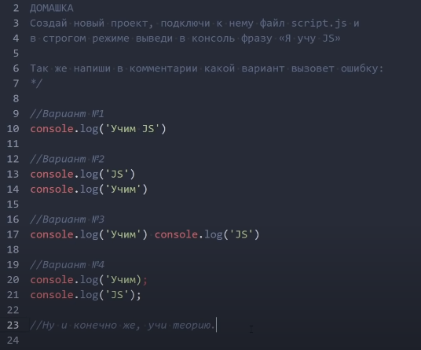
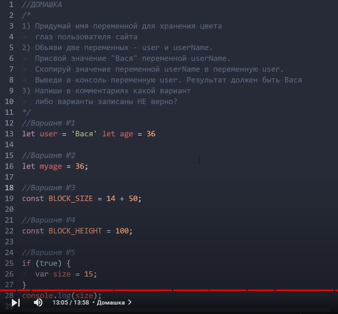
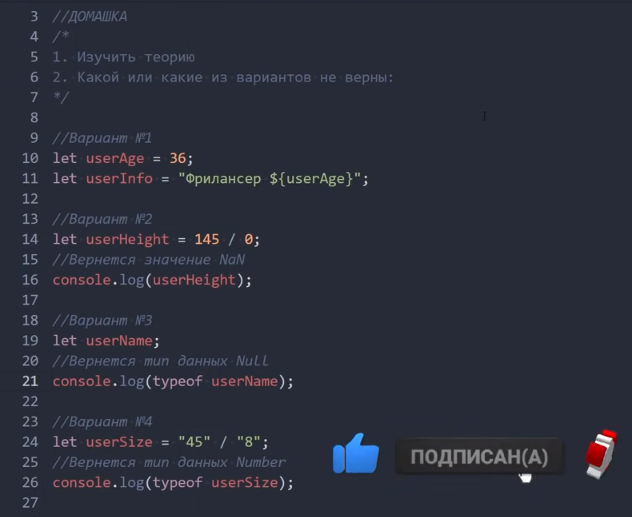

Основи синтаксису JavaScript
- 1. Помилку не викличе, але варто додати крапку з комою у кінці виразу.
- 2. Помилку не викличе, але також варто додати крапку з комою у кінці виразу.
- 3. Викличе помилку. Потрібно у кінці кожного виразу ставити крапку з комою або кожен вираз починати з нового рядка.
- 4. Викличе помилку - не закрили лапки.
Змінні та константи в JavaScript (ключові слова let, const, var)
- 1. Неправильно. Потрібно додати крапку з комою між виразами, або кожен вираз писати з нового рядка.
- 2. Помилку не викличе, але для кращої читабельності застосовуємо lowerCamelCase (myAge).
- 3. Неправильно. Великими літерами записуємо ім'я константи тільки якщо її значення є стале або відомо заздалегідь.
- 4. Правильно.
- 5. Правильно.
Типи даних JavaScript
- 1. Неправильно. Потрібно замінити лапки - ``.
- 2. Неправильно. Повернеться - Infinity.
- 3. Неправильно. Повернеться undefined, бо змінній не було присвоєно значення.
- 4. Правильно. Математичний оператор / автоматично перетворює тип даних на number.